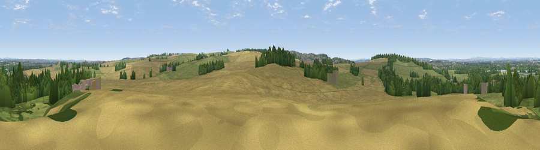

Viewpoint near Newton Solney
#25250 in England · top 34% of its area beats it · near Newton Solney · path 274 mWhere it is
The exact computed spot (SK 28375 25225). Click the marker for map links.
Public access: the nearest public right of way is about 274 m away — the final stretch may cross private land. Computed from Natural England's CRoW access layer and OpenStreetMap rights of way — not the legal definitive map. Always verify locally.
The view, rendered

A 360° render of this exact spot computed from the terrain model, tree cover and land cover — summer colours, afternoon light, calibrated against photographs of famous viewpoints. Real trees, hedges and buildings will differ in detail.
The panorama
Grey silhouette: terrain skyline in each direction (720 bearings, Earth curvature and refraction included). Dashed green: skyline with trees (+15 m) and buildings (+8 m) as obstacles. Blue strip: how far the ground is visible on each bearing.
Where the view opens
Wedge length = distance to the farthest visible ground on that bearing (vegetation-aware). Rings at 10, 25 and 50 km.
What fills the view
43% cropland · 32% grassland · 21% woodland · 3% built-up ·
Angular shares of the visible panorama (visual magnitude), not map area. Landscape diversity 0.53 (0–1 Shannon).
Key numbers
More beautiful places nearby
The staircase of upgrades: each row has a higher view potential than everything closer. Driving times are estimates from straight-line distance, calibrated against real road routing — check an actual route before setting out.
| Place | Direction | Drive | Score |
|---|---|---|---|
| Viewpoint near Newton Solney | W · 1 km | ~4 min | 49.3 |
| Viewpoint near Repton | E · 3 km | ~8 min | 50.2 |
| Viewpoint near Repton | ENE · 3 km | ~8 min | 51.1 |
| Viewpoint near Hartshorne | SE · 6 km | ~13 min | 57.6 |
| Viewpoint near Whitwick | ESE · 18 km | ~31 min | 63.5 |
| Viewpoint near Whitwick | ESE · 18 km | ~32 min | 71.2 |
| Ives Head | ESE · 21 km | ~35 min | 73.3 |
| Viewpoint near Stanton under Bardon | SE · 21 km | ~36 min | 76.0 |
52.82381, -1.58035 · source: screening · position refined by local search. Computed location — check access rights before visiting.